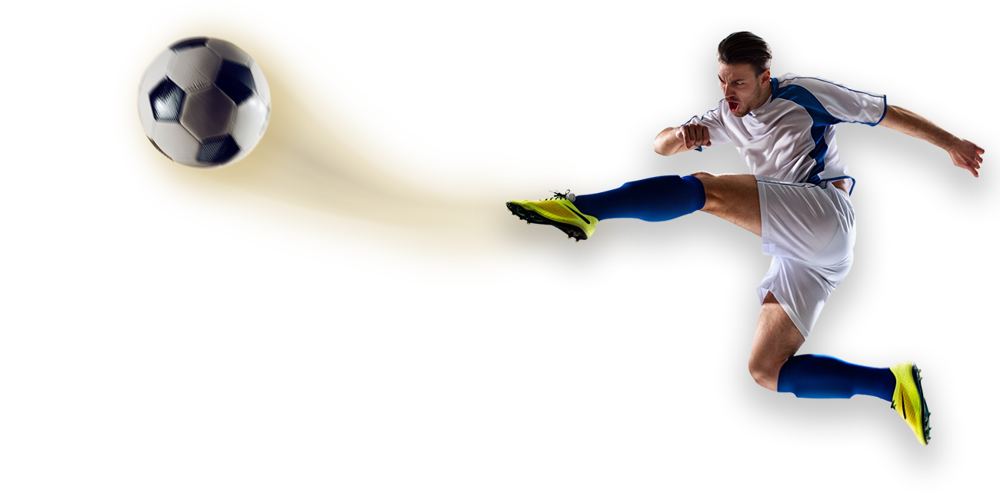

O que é
O futebol é um dos esportes mais populares no mundo. Praticado em centenas de países, este esporte desperta tanto interesse em função de sua forma de disputa atraente.
O futebol tornou-se tão popular graças a seu jeito simples de jogar. Basta uma bola, equipes de jogadores e as traves, para que, em qualquer espaço, crianças e adultos possam se divertir com o futebol. Na rua, na escola, no clube, no campinho do bairro ou até mesmo no quintal de casa, desde cedo jovens de vários cantos do mundo começam a praticar o futebol.
Primórdios
Embora não se tenha muita certeza sobre os primórdios do futebol, historiadores descobriram vestígios dos jogos de bola em várias culturas antigas. Estes jogos de bola ainda não eram o futebol, pois não havia a definição de regras como há hoje, porém demonstram o interesse do homem por este tipo de esporte desde os tempos antigos.

Origens na China Antiga
Na China Antiga, por volta de 3000 a.C., os militares chineses praticavam um jogo que na verdade era um treino militar. Após as guerras, formavam equipes para chutar a cabeça dos soldados inimigos. Com o tempo, as cabeças dos inimigos foram sendo substituídas por bolas de couro revestidas com cabelo. Formavam-se duas equipes com oito jogadores e o objetivo era passar a bola de pé em pé sem deixar cair no chão, levando-a para dentro de duas estacas fincadas no campo. Estas estacas eram ligadas por um fio de cera.
Origens no Japão Antigo
No Japão Antigo, foi criado um esporte muito parecido com o futebol atual, porém se chamava Kemari. Praticado por integrantes da corte do imperador japonês, o kemari acontecia num campo de aproximadamente 200 metros quadrados. A bola era feita de fibras de bambu e entre as regras, o contato físico era proibido entre os 16 jogadores (8 para cada equipe). Historiadores do futebol encontraram relatos que confirmam o acontecimento de jogos entre equipes chinesas e japonesas na antiguidade.
Origens na Grécia e Roma
Os gregos criaram um jogo por volta do século I a.C que se chamava Episkiros. Neste jogo, soldados gregos dividiam-se em duas equipes de nove jogadores cada e jogavam num terreno de formato retangular. Na cidade grega de Esparta, os jogadores, também militares, usavam uma bola feita de bexiga de boi cheia de areia ou terra. O campo onde se realizavam as partidas, em Esparta, eram bem grandes, pois as equipes eram formadas por quinze jogadores. Quando os romanos dominaram a Grécia, entraram em contato com a cultura grega e acabaram assimilando o Episkiros, porém o jogo tomou uma conotação muito mais violenta.
O futebol na Idade Média
Há relatos de um esporte muito parecido com o futebol, embora se usava muito a violência. O Soule ou Harpastum era praticado na Idade Média por militares que se dividiam em duas equipes: atacantes e defensores. Era permitido usar socos, pontapés, rasteiras e outros golpes violentos. Há relatos que mostram a morte de alguns jogadores durante a partida. Cada equipe era formada por 27 jogadores, onde grupos tinham funções diferentes no time: corredores, dianteiros, sacadores e guarda-redes. Na Itália Medieval apareceu um jogo denominado gioco del calcio. Era praticado em praças e os 27 jogadores de cada equipe deveriam levar a bola até os dois postes que ficavam nos dois cantos extremos da praça. A violência era muito comum, pois os participantes levavam para campo seus problemas causados, principalmente por questões sociais típicas da época medieval. O barulho, a desorganização e a violência eram tão grandes que o rei Eduardo II teve que decretar uma lei proibindo a prática do jogo, condenando a prisão os praticantes. Porém, o jogo não terminou, pois, integrantes da nobreza criaram uma nova versão dele com regras que não permitiam a violência. Nesta nova versão, cerca de doze juízes deveriam fazer cumprir as regras do jogo.
O futebol chega à Inglater
Pesquisadores concluíram que o gioco de calcio saiu da Itália e chegou a Inglaterra por volta do século XVII. Na Inglaterra, o jogo ganhou regras diferentes e foi organizado e sistematizado. O campo deveria medir 120 por 180 metros e nas duas pontas seriam instalados dois arcos retangulares chamados de gol. A bola era de couro e enchida com ar. Com regras claras e objetivas, o futebol começou a ser praticado por estudantes e filhos da nobreza inglesa. Gradualmente foi se popularizando. No ano de 1848, numa conferência em Cambridge, estabeleceu-se um único código de regras para o futebol. No ano de 1871 foi criada a figura do guarda-redes (goleiro) que seria o único que poderia colocar as mãos na bola e deveria ficar próximo ao gol para evitar a entrada da bola. Em 1875, foi estabelecida a regra do tempo de 90 minutos e em 1891 foi estabelecido o pênalti, para punir a falta dentro da área. Somente em 1907 foi estabelecida a regra do impedimento. O profissionalismo no futebol foi iniciado somente em 1885 e no ano seguinte seria criada, na Inglaterra, a International Board, entidade cujo objetivo principal era estabelecer e mudar as regras do futebol quando necessário. No ano de 1897, uma equipe de futebol inglesa chamada Corinthians fez uma excursão fora da Europa, contribuindo para difundir o futebol em diversas partes do mundo. Em 1888, foi fundada a Football League com o objetivo de organizar torneios e campeonatos internacionais.
A criação da FIFA
No ano de 1904, foi criada a FIFA (Federação Internacional de Futebol Association) que organiza até hoje o futebol em todo mundo. É a FIFA que organiza os grandes campeonatos de seleções (Copa do Mundo) a cada quatro anos. A FIFA também organiza campeonatos de clubes como, por exemplo, a Copa Libertadores da América, Copa da UEFA, Liga dos Campeões da Europa, Copa Sul-Americana, entre outros.
O futebol é um esporte coletivo que não tem sua origem bem definida, uma vez que diversos jogos de bola semelhantes a ele já eram praticados por povos da antiguidade.